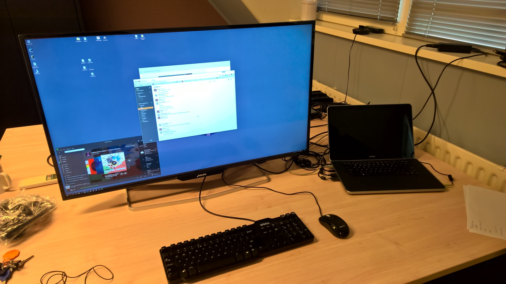
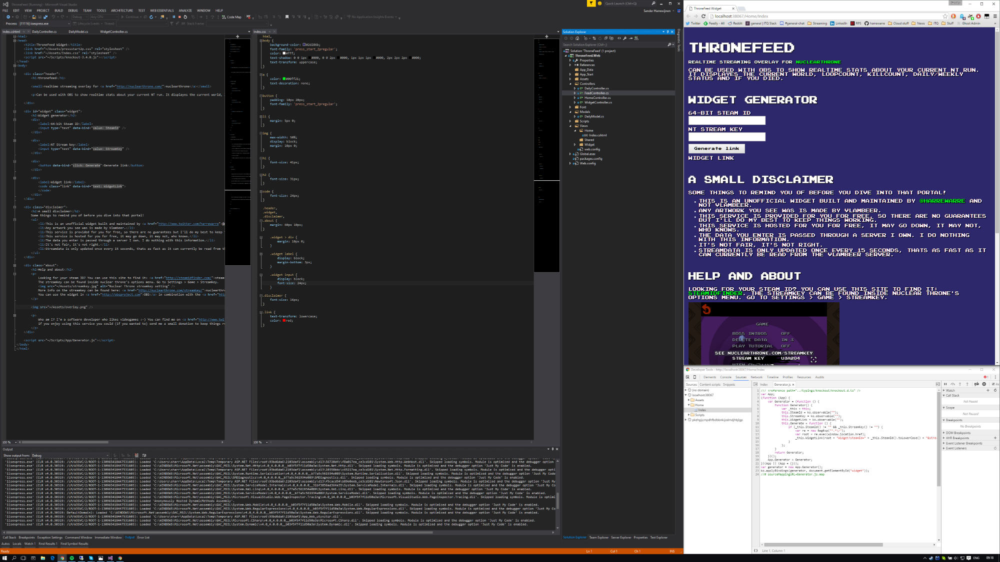

Going 4K with the Philips BDM4065UC
Dual screen setups are great for work but you can't always have two of the same size/model side by side. In my previous setup I had my laptop display as the primary and a secondary smaller screen. This being sub-optimal I figured it might be a good time to ask for a new display at work. New screens are nice, but what to ask for? Research time!
I looked at a bunch of 1440p displays but with 4k becoming a more viable solution I started researching really big screens. During my search I came across this post by Rick Strahl and his 4k Philips display. I had seen this display in my search and it certainly looked good on paper but having someone actually use it for development purposes gave me a really good insight. I was sold. 4K should be the way to go.
After some discussion on the pro's and con's of a huge 40" display it was decided. Reviews said it was good and I found someone that had relevant experience with the display! The display of choice: Philips BDM4065UC.
So here we are:

It is massive! My expectations we're set on a big screen but it is almost comically big. To give you a hint of the size, the laptop on the pic above is a 15.6" Dell XPS.

The Nvidia GT640M in my laptop has no trouble driving this many pixels and there is not much going on in terms of fan noise. There was some worry about the compatibility with my laptop. Driving 4k at 60Hz requires Displayport 1.2 but mine support that so it all worked out fine in the end.
I did need to manually set my output to 60Hz after connecting the screen the first time but that might have been the display being configured to Displayport 1.1 instead of 1.2.
I highly recommend you thoroughly research if your current setup allows you to run 4K at 60Hz before you decide to purchase!
Essentially I'm running 4 regular HD displays at once now which gives me a crazy amount of room for my development tools. So much in fact, that I'm still figuring out what the best layout for all the windows is!
Here is an example of an opened project with room to spare:

It certainly takes some getting used to but I really like the setup of just one very big screen. To take full advantage of 4K you can't really go any lower than 40". A smaller physical size would make displaying content at its native resolution without scaling up way to small to read comfortably. Scaling things up to make it readable sacrifices space to increase size which is fine if you want that but I set out to get the most space without scaling.
There is a downside to the Philips display though and that is that you cannot adjust its height. It sits on a fixed stand. A small portion of the screen is quite high this way but sitting directly in front of it doesn't really cause any problems. Most of the action takes place in the center of the display anyway, which sits directly in front of me. YMMV though so take note of the height if you are in the market for a big display. It can be mounted on a different stand with the VESA mounting on the back so that is always an option.
From what I've read in reviews the display works good for gaming as well but you'll have to try that yourself. For work (or in my case software development) purposes its great.
TL;DR:
- Philips BDM4065UC.
- Don't go any lower than 40" if you want to work without scaling.
- Big, but not extreme.
- It's great although the outer corners are a tiny bit darker than the rest.
- God-tier amount of usable screen space because you can run it without scaling.
- Not height adjustable.
- 60Hz. Research the whole Displayport thing on your existing setup before you buy.---